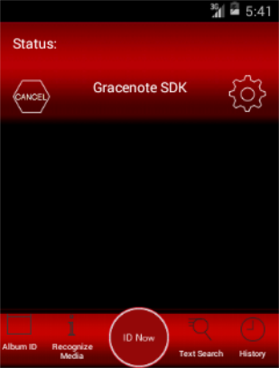

Open topic with navigation
Building and Running the Sample Application
To build and run the Sample Application:
-
Make sure you have a connected device (hardware) to your development environment. If no devices are connected, Android Studio launches the first available virtual device.
For hardware devices:
- Connect the device to a USB port.
- Ensure that the device configuration enables the Enable USB Debugging and Unknown Sources options.
- In Android Studio, choose Run>Run.
- In the Run As dialog box, choose Android Application (app). This builds the application and deploys it to your connected device.
- The application will start running. It will appear similar to the image below:

- Confirm the application works: place your device near an audio music source and click the id Now button. If no results are returned, then the application could not identify the audio files. If this is the case, verify the audio is sufficiently loud and repeat the test.
How can we improve this documentation?
Open topic with navigation